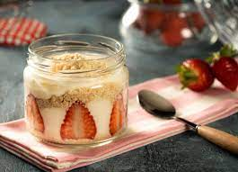
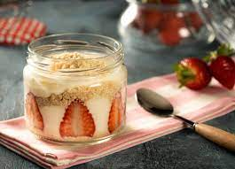

Tarif: nefisyemektarifleri
- Kaç kişilik : 4-6 Kişilik
- Hazırlama Süresi : 5 dk Hazırlık
- Pişirme Süresi : 10 dk Pişirme
Tarif: nefisyemektarifleri
Lezzetli Kremasıyla Çilekli Magnolia Tarifi İçin Malzemeler
Muhallebisi için:
Lezzetli Kremasıyla Çilekli Magnolia Tarifi Nasıl Yapılır?
Afiyet Olsun